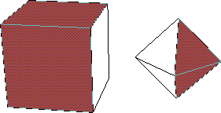

Figure 10.2 N-Dynamics Field types
Extending Dynamics The Dynamics Philosophy
Dynamics operates on a relatively simple philosophy. Users define actions, which are then executed sequentially over time. When you define your own dynamics operation, you create code which is also executed on a frame by frame basis. You'll also need to integrate your new operation with the Dynamics menu, and provide ways for users to manipulate the parameters which control your new operation.
Inheritance, Dynamic, and Static Values
One of the most useful attributes of Dynamics is the ability to program action along curves. A curve essentially provides a way of changing a parameter over time. Parameters whose values change over time are dynamic. Conversely, parameters whose values do not change are static. Within dynamics, the value of a given parameter might be determined explicitly for that parameter, in which case the value is said to be local. However, values can also be inherited from higher-level channels.
In the following discussion, we'll be making use of a dynamic operation we defined called Random Transform. The listing for this operation appears below. and can also be found in
Dynamics Operations/usr/local/ngc/demo/src/random-mvmt.lisp.
Preparing To Define Dynamics Operations
The basic steps in creating a dynamics operation are:
1. Define your Dynamics Operation function.
RANDOM-NEG, which randomly returns 1 or -1.
CLEAN-RANGE, which returns either the argument passed it, or 1 if the argument is nil or 0.
RANDOM-TRANSFORM, which creates a random transformation and applies it to an object.
OBJECT - the object to randomly move.
WHICH-AXES - allows the user to specify all axes, or one axis.
RANGE - The maximum displacement along any one axis per frame.
HOME - When Yes, the object is returned to it's home position at the beginning of each frame.
;;; -*- Mode: Common-Lisp; Package: DYNAMICS; -*-
(in-package :geometry)
:======================================================================
; Functions used in the Dynamic Operation
;======================================================================
;;;random-neg returns either 1 or -1, randomly
(defun random-neg ()
(if (eq 1 (random 2))
-1
1))
(defun clean-range (range)
(cond ((or (eq range nil)
(eq range 0))
1)
(t range)
))
; Random transform generates a temporary transformation matrix (temp-matrix)
; then alters that matrix. The :move argument to alter-3d-matrix requires 3 args
; which are displacements along each axis. The displacements themselves are calculated
; with respect to the value specified for range in the Dynamics parameters menu.; If home is "YES", then the object is returned to its home position before the altered
; matrix is applied to the object, resulting in the object "hovering" around it's home
; position. Otherwise, there are no constraints other than RANGE on the possible position
; of the object.(defun random-transform (object home x-range y-range z-range)
(3d::using-transform-matrix ((temp-matrix))
(let (
;;; These forms set the value of each range to:
;;; 1 if it is 0 originally
;;; the original value multiplied by 1 or -1 returned by (random-neg)
(x (* (random-neg) (clean-range x-range)))
(y (* (random-neg) (clean-range y-range)))
(z (* (random-neg) (clean-range z-range)))
)
;;; alter the temporary matrix by moving it along each axis by the values we just
;;; generated
(3d::alter-3d-matrix temp-matrix
:move (3d::make-ftriplet! x y z))
;;; If home is YES, then move the object back to its home position
(if (string-equal home "YES")
(3d::initialize-transformation object))
;;; Then, apply the modified transformation matrix to the object
(3d::transform object temp-matrix))))
(in-package :dynamics)
;======================================================================
; Creating the Dynamics class
; This function creates a class listing in the Dynamics Operation menu.
;======================================================================
(def-dynamic-operation-class 3d::random
"randomness"
"Operations to introduce a little chaos into your scripts"
:geometry
:dynageometry)
;;======================================================================
;;; The dynamic operation itself.
;;======================================================================
(dyna::define-dynamic-operation (random-transform
:class 3d::random
:universe :dynageometry
:pretty-name-string "Random Movement"
:documentation
"Record animation data for export")
((object `dyna::object
:prompt "Object"
:documentation "Select object for randomization")
(which-axes `dyna::symbol
:prompt "Axes?"
:default :all
:field-type `ui::multiple-choice-field
:field-args
`(:subfield-info `((:label "All" :on-value :all)
(:label "Choose" :on-value :choose))
:reformat-on-select t)
:documentation "Select axes for movement"
)
(axes `dyna::symbol
:prompt "Choose Axes"
:default :x
:field-type `ui::multiple-choice-field
:field-args
`(:subfield-info `((:label "X" :on-value :x)
(:label "Y" :on-value :y)
(:label "Z" :on-value :z))
:reformat-on-select t)
:expose-test (dyna::action-test :which-axes `(:choose))
)
(range `3d::factor
:dynamic-p t
:prompt "Range"
:documentation "Enter range for position to vary by")
(home `dyna::yes-or-no
:prompt "Home?"
:default :no
:documentation "Reinitialize transform for each frame?")
)
(format t "axes: ~a which axes: ~a~% " axes which-axes)
(cond ( (string-equal which-axes "ALL")
(3d::random-transform object home range range range))
((string-equal axes "x") (3d::random-transform object home range nil nil))
((string-equal axes "y") (3d::random-transform object home nil range nil))
(t (3d::random-transform object home nil nil range)))
(if (and *last-frame-p*
(string-equal home "YES"))
(3d::initialize-transformation object)))
Anatomy of a Dynamics Operation
When users specify operations for dynamics channels, the first thing which appears is the operations class menu. Selecting an operation class results in a menu of operations, as shown in Figure 10.1.
Choosing an operation adds a channel with that operation to the current script.
Defining Dynamics Operations Classes
You can define a new class of Dynamics Operation with DYNA:DEF-DYNAMIC-OPERATION-CLASS macro, which has the following general form:
(dyna:def-dynamic-operation-class symbol-for-class pretty name documentation category
universe)
(def-dynamic-operation-class 3d::random
"randomness"
"Operations to introduce a little chaos into your
scripts" :geometry
:dynageometry)
Dynamics Classes Utilities
The global variable dyna::*known-operation-classes* is a list of all currently defined Dynamics Operations classes. Describing a class yields all the information you're likely to need to add an operation to that class. For example,
(describe (first dyna::*known-operation-class*))
#<DYNAMIC-OPERATION-CLASS @ #x126b7fe2> is a structure of type DYNAMIC-OPERATION CLASS.
It has these slots: NAME-SYMBOL :BASIC-FUNCTIONS
PRETTY-NAME-STRING "Basic Functions"
MOUSE-DOC-LINE "Menu of basic programming operations."
CATEGORY :DYNAMICS
UNIVERSES :DYNALISP
DYNA::FIND-DYNAMIC-OPERATION-CLASS. So, to find the random class we defined in our example:
(dyna::find-dynamic-operation-class `random)
#S(DYNAMIC-OPERATION-CLASS :NAME-SYMBOL RANDOM :PRETTY-NAME-STRING "randomness"
:MOUSE-DOC-LINE "Operations to introduce a little chaos into
your scripts"
:CATEGORY :GEOMETRY :UNIVERSES :DYNAGEOMETRY)
dyna::*known-operation-classes* to find the name symbol for any defined class.
Controlling Input with Parameters
You'll use parameter fields to provide a way for users to interact with your dynamic operations. Each field type is designed to bind a variable to an object of a specific type. Field-types map to Dynamics parameter classes (this time we mean classes in the CLOS sense). There are many built in parameter classes, and you can also define your own.
(defclass 3D-OBJECTS-FIELD (ui::object-field)
()
( :default-initargs
:documentation (ui::make-three-part-who-line "L: Choose 3D objects.")))
;;
(defmethod UI::SELECT-METHOD((self 3D-OBJECTS-FIELD) mx my buttons)
(declare (ignore mx my buttons))
(let ((val (rest (3d::choose-objects t))))
(when val
(setf (ui::field-value self) val)
(dolist (obj val)
(dyna::register-3d-object obj)) ; defined below until 3d obs are ext obs
(ui::draw-field self)
(ui::make-visible self)
)
))
DYNA:DEFINE-FIELD-TYPE:
(DYNA:DEFINE-FIELD-TYPE (field-type class-type &OPTIONAL
field-init-args)choose-objects class:
(define-field-type `3d-objects-field `3d-objects)
(objects `3d-objects
:prompt "Object"
:documentation "Select an Objects"
Built-in Dynamics Parameter Field Types
N-Dynamics includes many predefined field types, summarized in Table 10.1. Figure 10.2 and Figure 10.3 show how each field looks.
Setting Parameter Type Defaults
You can define global defaults for all parameters of a given type with DYNA:DEFINE-GLOBAL-DEFAULT-FOR-TYPE. For example, the following form sets up a default of 0.0 for all instances of parameter type numeric-inheritable-property.
(define-global-default-for-type numeric-inheritable-property 0.0)
Parameter Type Slider Defaults
Many parameters can be modified using a special dialog, the Dynamics Slider (Figure 10.4).
(DYNA:DEFINE-SLIDER-PARAMETERS-FOR-TYPE type &REST plist)
Defining Parameters
Once you've defined types, fields, and slider defaults for your parameters, you need to define parameter properties (parameter parameters, if you will). These are defined within the dyna:define-dynamic-operation form with the parameters themselves. Parameter properties are summarized in Table 10.3.
For example, a typical parameter definition might look something like this:
(number 'numeric-inheritable-property
:prompt "Number"
:nil-ok-p t
:dynamic-p t)
(number 'numeric-inheritable-property
:prompt "Number"
:nil-ok-p t
:default 1.0
:dynamic-p t)
:dynamic-default :static means that the parameter can be dynamic, but is static by default. For example,
(number 'numeric-inheritable-property
:prompt "Number"
:nil-ok-p t
:default 1.0
:dynamic-p t
:dynamic-default :static)
Controlling Program Flow
There are several utilities you can use to manage the behavior of your Dynamics operations. For example, in Random Transform we used the *last-frame-p* predicate, which returns t when an animation reaches the last frame. Other predicates are listed in Table 10.4.
The N-Geometry window is basically a 3D object editor. When you (SHIFT-L) on on element in the N-Geometry editor, the menus which appear are specialized for the selected element. For example, transformation options never appear when you've selected a segment, and cut is an inappropriate choice for an object. These specialized menus and their behavior are defined with edmethods.
Extending Geometry
The N-Geometry 3D object editor is completely extensible. You extend the editor by defining new methods called edmethods, and adding them to the Geometry editor menus. Because edmethods are specialized on Geoclasses, they automatically appear in the editor menus when the user has selected an object or element of an object relevant to the method.
Understanding Editor Methods
The basic steps in defining a new edmethod are:
GeoClasses
Every Geometry element class, polyhedra, segments, vertices, etc., has GEOCLASS as its metaclass. Slots in the GEOCLASS determine (among other things) whether a given class can be edited in the Geometry window. Classes having geoclass as their metaclass are defined using (defgeoclass).
(defgeoclass (name superclasses slots &rest options))
:BODIABLE-P - a boolean, the default for which is NIL. When T, instances of a geoclass can be treated by geometry as bodies. For example, point-lights and vertices are both zero-dimensional elements. Each has LOCUS as a common superclass. Point-lights are defined with :bodiable-p t, so they can be treated as bodies in the Editor window. Vertices, on the other hand, are defined with :bodiable-p nil, so they can only be a component of a body, never a body themselves.
For example, we can create a subclass of vertex called my-vertex, which is not editable:
(defgeoclass MY-VERTEX (vertex)
()
(:editable-p nil)
)
my-vertex is a subclass of vertex, I can make all of the editing operations available for vertex available to my-vertex by setting editable-p to t.
Geoclass Utilities
(FIND-GEOCLASS (SYMBOL &OPTIONAL (ERRORP T))
(find-class) but is restricted to geoclasses. For example, to find the geoclass skeleton:(find-geoclass `skeleton)
#<GEOCLASS SKELETON>
(BODIABLE-GEOCLASSES())
:bodiable-p is t.(EDITABLE-GEOCLASSES ())
:editable-p is t).edcategories. Operations themselves are represented by ed-menu-items.
Ed-categories are constructed with
DEF-EDCATEGORY:
(DEF-EDCATEGORY (NAME &OPTIONAL PRETTY-NAME DOCUMENTATION))
name - a symbol.
:TRANSFORM
:DISPLACEMENT
:GEOMETRIC
:EXTRUSION
:SUBDIVISION
:TOPOLOGIC
:GENERATOR
:SELECTOR
:FIXUP
:MISCELLANEOUS
Editor Menu Items (edmenu-items)
The operations themselves are represented by edmenu-items. An edmenu-item corresponds to one item in the Editor menus. In other words, the various CUT operations (for wires, faces, segments, etc.) are all represented by a single edmenu-item.
Use
DEF-EDMENU-ITEM to define a new edmenu-item:
(def-edmenu-item (name category menu-item-name
&optional insert-point)
name - a symbol.
menu-item-name - a string, the default is a string derived from name.
insert-point - an edmenu-item after which to insert the new edmenu-item.
Edmenu-item Utilities
(FIND-EDMENU-ITEM (SYMBOL &OPTIONAL (ERRORP T)))
Returns an edmenu-item, given a symbol which evaluates to an edmenu item. For example,
3D(22): (find-edmenu-item `cut)
(FIND-EDMENU-ITEM-BY-MENU-ITEM-NAME (NAME)
3D(23):(find-edmenu-item-by-menu-item-name "Axis Move")
Now that we know how to integrate our new methods with the Geometry Editor interface, we're ready to actually create a usable edmethod. Of course, we use
Defining Editor Methods (edmethods)DEFEDMETHOD to do so:
(defedmethod name arglist ((edmenu-item handler &optional
mouse-button include-classes exclude-classes) &rest
options) &body body)
name - the name of the method.
arglist - the argument list to the method. Usually bdis&elements (see below).
edmenu-item - the edmenu-item to associate with the new method.
include-classes - a list of classes for which the method will be available.
So, for example, to define a new editor method called MY-CUT:
(defedmethod MY-CUT (bdis&elements)
((my-cut my-cut L))
"An example defmethod"
Understanding bdis&elements
Nearly all editor methods accept a list of bdis and elements associated with the currently selected elements. Parsing this list allows for a method to determine which objects and bodies to operate on, and helps you to detect situations (such as elements selected from two different bodies) where your method may not be appropriate.

then evaluate
(get-selected-el-alist *camera*):
3D(23): (get-selected-el-alist *camera*)
((#<BDI (Octahedron) @ #x196ccf0a> #<FACE 1> #<FACE 5>)
(#<BDI (Cube) @ #x196c5832> #<FACE 3> #<FACE 1>))
Using the bdis&elements List
The following code demonstrates how to use the bdis&elements list to check the element list passed to your method. In this case, the loop-applying-operation form looks through the list to determine whether or not multiple faces have been selected:
(when (loop-applying-operation (bdis&elements `cut-face bdi) (op el elist)
(:prefer-compound-op t
:extra-args ((cdr (assoc bdi seglist)))
:return-vals (newf newe)
:post-op-forms (setq *modified-faces* (append elist newf)
*modified-edges* (append (collect-my-segments elist)
newe))))
(unlock-elements self nil)
`cut-face)
A Sample Edmethod
The following is a complete example edmethod, specialized for a face. The method accepts a numeric argument, then divides the selected face into the specified number of faces.
(DEF-EDMENU-ITEM MULTI-CUT-FACE
(:subdivision :main) "Multi-Cut")
(defedmethod ED-MULTI-CUT-FACE (bdis&elements)
((multi-cut-face multi-cut-face L ))
"Make multiple division of face between edges"
(with-slots (cached-elements) self
(let* ( (el cached-elements)
(seglist (sel-elements
(select-n-elements self 2 `edge el nil "to cut between.")))
(pt1 (first seglist))
(pt2 (second seglist))
(n 4)
)
(declare (special n))
(unless (or (< (length seglist) 2) (eq pt1 pt2))
(3d-cvv-choose "Number of faces" `((n "# of Faces?" :integer)))
(funcall-with-history #'multi-cut-face el seglist n) t)))
)
(defmethod MULTI-CUT-FACE ((self face) segments n)
(
.......Your implementation here.....
)
N-Geometry has a specialized suite of user-interface tools. Known as cvv forms, these tools provide powerful and flexible tools for you to use when interacting with the user via your edmethods. In the above example, we used (
Geometry User Interface Utilities3d-cvv-choose), which produces a dialog box like this:
Copyright © 1996, Nichimen Graphics Corporation. All rights reserved.